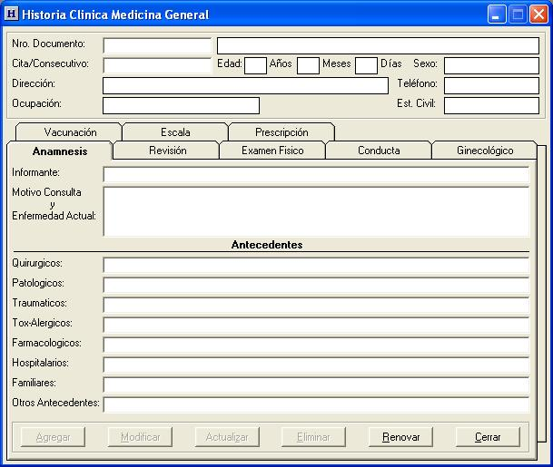
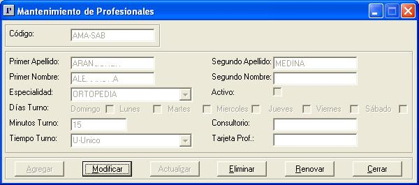
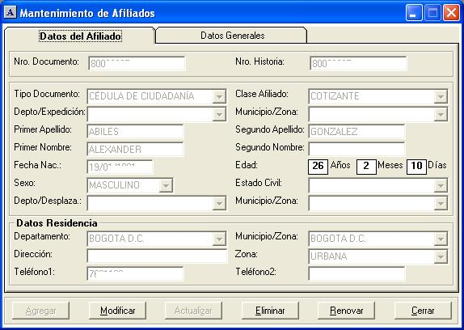
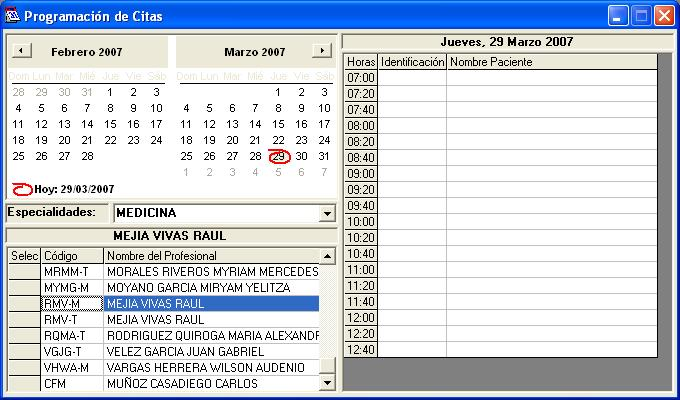
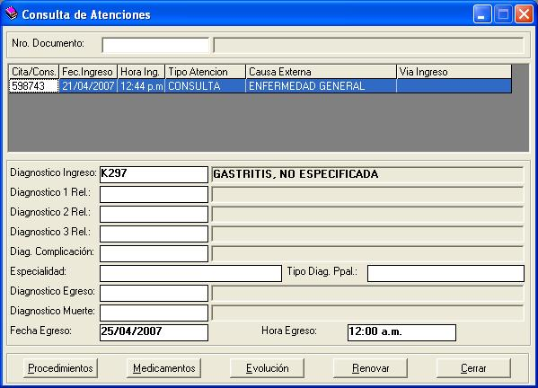
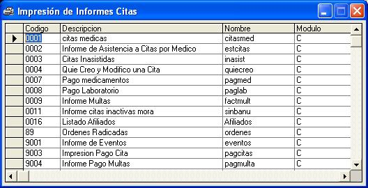

Es un sistema para facilitar el control de las citas de los pacientes mediante el agendamiento a los diferentes profesionales, llevando la historia clínica y el control de los procedimientos, medicamento y eventos realizados en sus respectivas citas.
Generando una información detallada, para ser utilizada en las etapas que el beneficiario tendrá y así llevar una estadástica de los recursos utilizados para su atención.
Funciones Generales
- Sistema multi-compañias, multi-entidades y multi-tarifas.
- Parámetros configurables, para una fácil administración de la información.
- Manejo intuitivo para las diferentes opciones dentro de cada pantalla.
- Codificación de los maestros que interviene en la aplicación.
- Búsquedas por diferentes criterios para mejor localización de la información solicitada.
- Opciones de vinculo a otras pantalla para profundizar en la información.
- Informes y consultas para facilitar la interacción con la información.
- Mediante señales y mensajes informa a los usuarios del sistema de las diferentes alertas.
- Opciones de exportación de datos para actualizar la información en el sistema.
- Menús, opciones y accesos directos personalizados para cada usuario del sistema.
Beneficios
- Al realizar la asistencia de las citas y los procedimientos realizados, se dispone del 100% de la información para la generación del RIPS.
- Al controlar las citas, se lleva una mejor atención departe de los profesionales a los pacientes.
- Diez diferentes turnos y ausencias para una mejor programación de los profesionales y su horarios.
- Disminución al máximo de los errores en la captura de la información por ser codificados.
- Pantallas ágiles bien sea para usuario del sistemas o profesionales en salud.
- Por ser parametrizable no se necesita de asistencia técnica para cambio en los diferentes maestros de tablas.
- Almacenamiento de la información del pacientes en sus diferentes citas para consultas posteriores.
- Se dispone de reportes que suministraran información y estadástica.
Historias Clínicas
Permite la captura de los diferentes formatos de historias, las evoluciones y prescripciones de procedimiento y medicamentos a nivel de profesionales, para complementar la información de las consulta a los pacientes
Profesionales
Mantenimientos de los profesionales, asignación de turnos normales y prioritarios, días laborales, profesión, duración de citas, consulta de citas atendidas por rangos.
Menús del Sistema
- Afiliados
- Citas Medicas
- Atenciones
- Historias Clínicas
- Profesionales
- Informes
- Tablas
- Utilidades
Afiliados
Permite crear los datos básicos de los pacientes así como su posterior mantenimiento, relación de los beneficiarios de cada paciente, las consultas que se le han realizado y las pendientes por asistir.
Citas Medicas
Agendamiento de las citas, mantenimiento de prioritarias, cancelación de multas, pago de eventos y consultas por rangos, para una completa administración de todas las consulta realizadas o por realizar.
Atenciones
Maneja los datos referentes del ingreso de pacientes, los procedimientos realizados, medicamentos entregados, consultas históricas de consultas y generación de los archivos del RIPS
Informes
Generación de los diferentes informes de citas y atenciones, para ser previsualizados, impresos o generados como archivos de Texto, Excel, Word y E-mail.
Tablas
Mantenimiento de los diferentes maestro del sistema como: Entidades, Sexos, Niveles, Diagnósticos, Procedimientos, Medicamentos, Tarifas, Eventos, Profesiones, Festivos, Tipos de Documentos, etc.
Utilidades
Administración de los parámetros que intervienen en el sistema, Creación de usuarios, Asignación de permisos, Importación de archivos, Auditoria, Métodos de impresión.
Arquitectura Hardware / Software
(Requerimientos Mínimos) Arquitectura cliente servidor, desarrollo en Microsoft Visual Basic y Base de Datos Microsoft Access, reportes en Crystal Reports y archivos en formato Texto y Excel.
Hardware
Servidor: Procesador Pentium o superior, 64 Mb de RAM, 30 Megas de espacio en disco.
Cliente: Procesador Pentium o superior, 32 MB de RAM, 10 megas de espacio en disco.
Software
Servidor y Clientes: Microsoft Windows 95 o superior.
Nota
Este brochure no presentala descripción de todos los componentes del sistema.